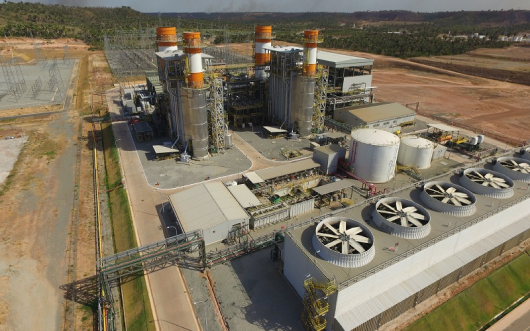

PORTO DE SERGIPE - THERMOELECTRIC PLANT

At the Porto de Sergipe- thermoelectric plant, Reditech developed control software and commissioned the seawater collection system, which consists of desalinate the water through the reverse osmosis process and thus supply demineralized water to the recovery boilers.
The system consists of a system of seawater collection pumps, coagulation, flocculation and coagulation, flocculation and clarification tanks. The clarified water passes through multi-media filters and a reverse osmosis system.
Its basic operation involves pumping the raw water from the sea into a system of tanks where chemicals are dosed to coagulate, flocculate and clarify the water. This water is then sent to a clarified water tank from where it is pumped via a Multimidia filter made up of anthracite, sand, garnet and pebble filter beds.
After passing through the Multimidia Filter, the water is sent to Reverse Osmosis. The permeate from the Osmosis will be sent to the Permeated Water Tank and the generated waste will be sent to the Effluent Tank. The permeate is pumped to the mixed bed exchangers from which demineralized water is obtained for use in the boilers of the thermoelectric plant.
"At the Porto de Sergipe - thermoelectric plant, Reditech developed control software and did the commissioning of the seawater collection system"